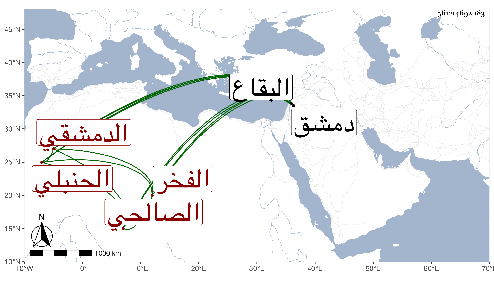

0902Sakhawi.DawLamic.ITO20230111-ara1.EIS1600.561214692083
Biography ID: 561214692083
466
عثمان بن علي بن إبراهيم الفخر التليلي نسبة لتليل قرية من البقاع من ضواحي دمشق من جملة أوقاف مدرسة أبي عمر الدمشقي الصالحي الحنبلي ويعرف بالتليلي . ولد على رأس القرن وسمع على عبد القادر الأرموي النسائي بفوت المجلس الأول بروايته عن ابنه الكمال عن السبط ، وحدث سمع منه بعض الطلبة وأم بجامع الحنابلة بالسفح وعلم وخطب به وهو ممن لازم أبا شعر واختص به ثم بابن قندس وغيرهما ، وحج وجاور وكان فقيها غاية في الورع والزهد درس وأفاد مع التجرد للعبادة من تلاوة وقيام حتى فاق في ذلك وتجلد له مع كبر سنه حتى مات في سنة ثلاث وتسعين إما في رجبها أو غيره وصلى عليه بالجامع الجديد ثم بالجامع المظفري وكان له مشهد عظيم والثناء عليه مستفيض رحمه الله ونفعنا به .
